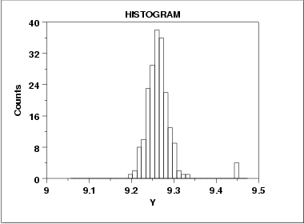

|
1. Exploratory Data Analysis 1.3. EDA Techniques 1.3.3. Graphical Techniques: Alphabetic 1.3.3.13. Histogram 1.3.3.13.8. Histogram Interpretation: Symmetric with Outlier |
|
|
 |
|
|
A symmetric distribution is one in which
the 2 "halves" of the histogram
appear as approximate mirror-images of one another.
The above example is symmetric with the exception of
outlying data near Y = 4.5.
An outlier is a data point which comes from a distribution different (in location, scale, or distributional form) from the bulk of the data. In the real world, outliers have a range of causes, from as simple as
to more subtle causes such as
All outliers should be taken seriously and should be investigated thoroughly for explanations. Automatic outlier-rejection schemes (such as throw out all data beyond 4 sample standard deviations from the sample mean) are particularly dangerous. The classic case of automatic outlier-rejection becoming automatic information-rejection was the South Pole ozone depletion problem. Ozone depletion over the South Pole would have detected years earlier except for the fact that the satellite data recording the low ozone readings had outlier-rejection code which automatically screen out the "outliers" (that is, the low ozone readings) before the analysis was conducted. Such inadvertent (and incorrect) purging went on for years. It was not until ground-based South Pole readings started detecting low ozone readings that someone decided to double-check as to why the satellite had not picked up this fact--it had, but it had gotten thrown out! The best attitude is that outliers are our "friends", outliers are trying to tell us something, and we should not stop until we are comfortable in the explanation for each outlier.
Recommended Next Steps
2. Quantitatively check for outliers (in
|
|